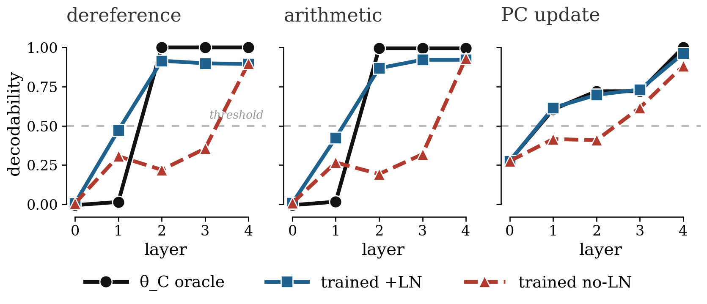
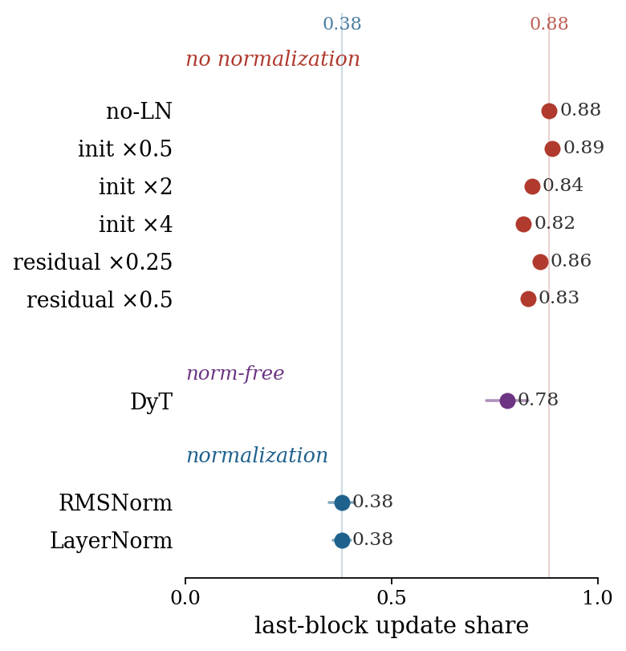
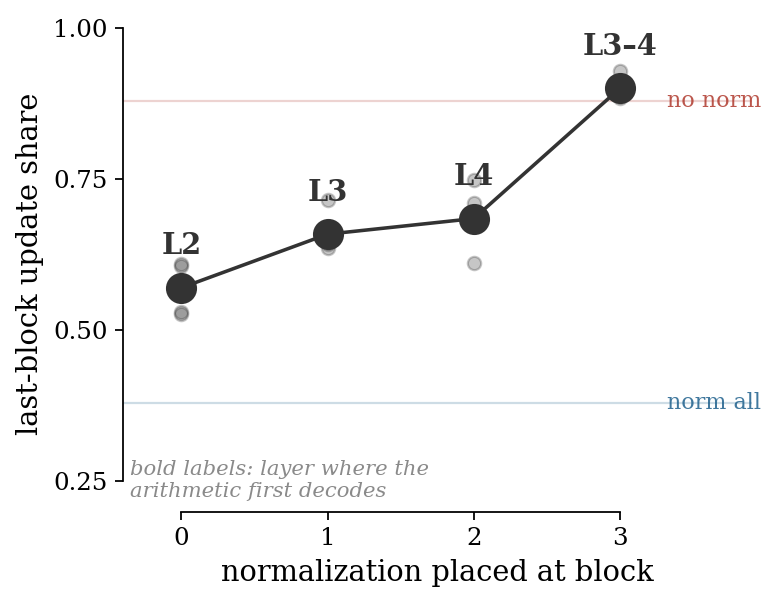
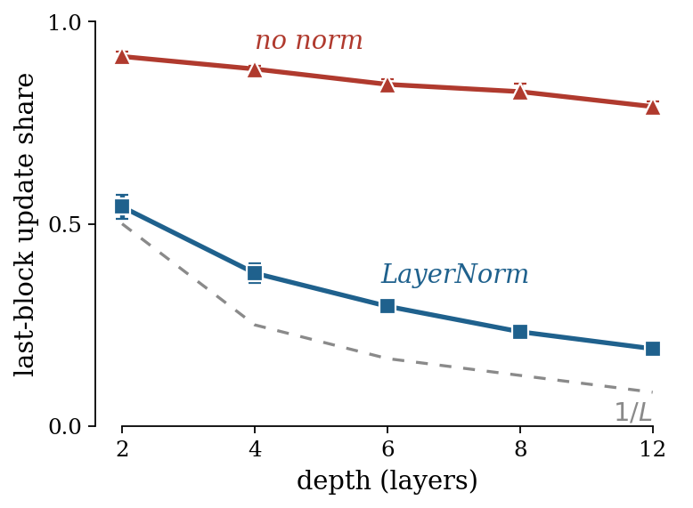
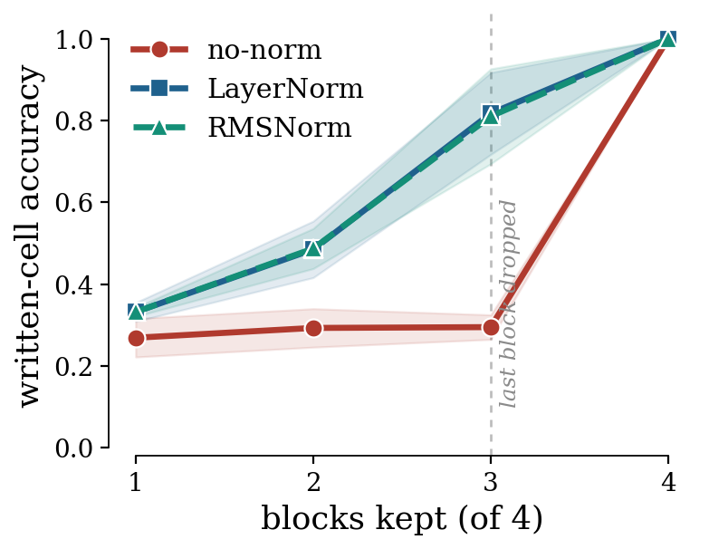

Anthropic just showed that a transformer's computation is organized by depth — a middle-layer “workspace” between what it reads and what it says. Here is a ground-truthed toy where we can watch that organization form, and find one ordinary component — normalization — that decides where each step lands.
In collaboration with Microsoft Research · “Which Layer Runs the Program? Normalization, Not Depth, Decides Where a Transformer Executes Each Step.”
The paper — and the code — are available on request at anastasios@rice.edu.
This line of work was inspired by Dimitris Papailiopoulos’s essay “Can You Train a Computer?”
In July 2026, Anthropic reported that a large language model's computation is organized by depth: an intermediate band of layers acts as a “global workspace” that holds and broadcasts concepts, sitting between an early “sensory” region and a late “motor” region aligned with the output. It is a striking map of where computation lives inside a transformer — read off a fixed, pretrained model. It also raises the obvious next question: what puts the workspace there?
We study the controlled version of that question on a tiny transformer whose “correct” layer layout we know exactly, and find that a component practitioners add almost as an afterthought, for training stability — normalization — decides the depth at which each step of a learned algorithm is computed. And because it is a cause, it is a knob: move the normalizer, and the computation moves with it.
The trouble with asking where a computation happens inside a network is that we almost never know where it ought to happen. Anthropic's workspace, like every mechanistic-interpretability result, has to recover its own ground truth after the fact. So we picked a task that comes with an answer key. SUBLEQ is a programming language with a single instruction — subtract, and branch if the result is at or below zero — and that one instruction is enough to compute anything (it is Turing-complete). Because it is so simple, you can build a small transformer by hand that executes it, and you can write down, in advance, which layer ought to compute each step: fetch the operands at layer 1, dereference and subtract at layer 2, and so on. Call that hand-built circuit the oracle.
Then we train a second transformer, from random noise, to do the same job — and read it, layer by layer, against the oracle's known layout, trusting a probe only once it has recovered the oracle's answer key first. This gives us the rare thing interpretability usually lacks: a network whose correct internal schedule we know, so that “where does this step get computed?” has a checkable answer rather than a story.

We change exactly one thing. Two families of four-layer networks are identical in task, depth, width, activation, optimizer, and seed — they differ only in whether a normalization layer is present. The effect is not subtle. Without normalization, the dereference and the arithmetic do not become readable until the final layer; the network defers its real work to the end. With it — LayerNorm or RMSNorm, it makes no difference — both surface early, at layer 2, exactly the layer the hand-built oracle uses, and later layers merely carry the answer forward.
One number summarizes it, read straight off the forward pass: the fraction of the network's total layer-to-layer change contributed by its last block. Spread evenly across four layers that share would be about \(0.25\); pile everything into the last layer and it approaches one. Unnormalized networks sit at \(0.88\); normalized ones at \(0.38\). Same task, same accuracy, one layer of difference in the recipe — and the computation moves halfway across the network.

Because normalization is the cause, we can act on it. Put a single normalization layer at a chosen block and the computation follows: with it at block 0 the arithmetic decodes at layer 2, at block 1 at layer 3, at block 2 at layer 4 — the last-block share climbing in step from \(0.57\) to \(0.90\). You are placing the computation at a depth of your choosing. The depth of a learned step is not fixed by the task; it is set by where you put the normalizer.

The effect is a scaling law, not a four-layer accident. Sweeping depth from two to twelve layers, unnormalized networks stay concentrated while normalized ones track the even \(1/L\) share almost exactly — the gap between them widening with depth. And it really is the rescaling that matters: a norm-free stand-in (Dynamic Tanh, which saturates but does not rescale to a fixed norm) leaves the network concentrated at \(0.78\), close to having no normalization at all. And the effect is robust in the ways that matter: it holds whether the normalizer sits before or after each block, and even with the weight decay turned off — it is the normalization itself, not a placement trick or a training-regularizer side effect.

Two guardrails, because the metric can flatter itself. First, that last-block number partly reflects a ruler effect: the residual stream grows across depth either way, so the last block acts on a larger input and its change looks bigger for free. Divide the stream size out and the unnormalized concentration falls from \(0.88\) to \(0.61\) — smaller, but still \(2.4\times\) the even share. The concentration is genuine; the raw metric overstates it. Second, and more important, the claim that matters does not lean on the metric at all: we simply remove the last block and read the output. The unnormalized network, having banked everything there, collapses; the normalized one, which spread the work, keeps most of its accuracy. Depth becomes load-bearing — or not — depending on the normalizer.

It is not a quirk of one computer, either. The same signature appears across other one-instruction languages, and on modular addition — a circuit we did not hand-build — where removing normalization again banks the computation late (\(0.89\)) while LayerNorm and RMSNorm distribute it (\(0.31\), \(0.32\)). We keep the theory deliberately small: it says precisely what the metric measures and why normalization touches it, and leaves the load-bearing claims to the interventions. Where the arithmetic itself lives, when we ablate to find it, is attention rather than the feed-forward block.
Anthropic's result and this one are asking the same question from opposite ends. They read, off a real model we cannot hand-build, that computation is organized by depth. We ask, on a model we understand completely, what sets that organization — and find that a component nobody added for this purpose, one meant only to make training stable, quietly acts as an implicit bias on the depth-layout of a learned algorithm, and can be turned like a dial. As more of what our models do is found by training rather than designed by us, where a computation ends up is decided less by the circuit and more by the optimizer and the architecture around it. Measured here against ground truth, normalization looks like one honest handle on that — a candidate for reading, and maybe steering, where computation lives in the models we can only train.
Results are paired and multi-seed on a four-layer, width-256 SUBLEQ transformer, with the hand-built oracle as ground truth; the last-block-share metric is reported with its stream-normalized correction, and the load-bearing claim is the last-block-removal test, which uses no metric. The full write-up and the code are available on request at anastasios@rice.edu. By Anastasios Kyrillidis (Rice University), in collaboration with Microsoft Research. On Anthropic's global workspace, see transformer-circuits.pub/2026/workspace.
← All AI-OWLS posts